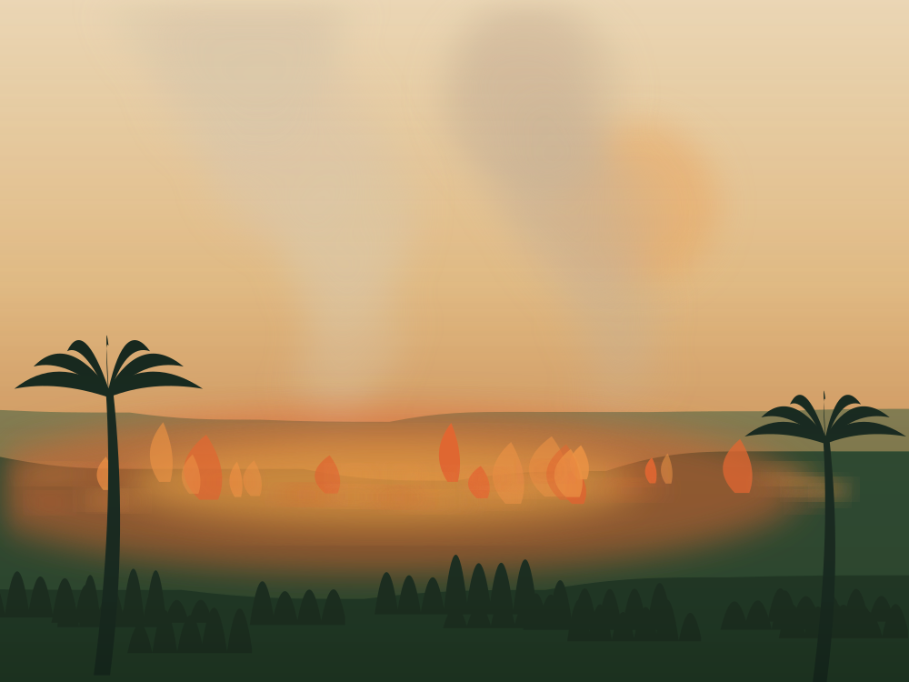
Queimadas
Queimadas na Amazônia aumentam e ameaçam a preservação da floresta
O avanço dos incêndios intensifica os impactos ambientais, prejudica a biodiversidade e afeta as comunidades que dependem da floresta em pé.
Ver maisPlantão do clima, atualizado 24 horas por dia.
Plantão do clima
O que está acontecendo com a floresta, o gelo e o clima — contado sem jargão, com a fonte sempre à vista. E, no fim de cada página, o que dá para fazer com o que você acabou de ler.

Queimadas
O avanço dos incêndios intensifica os impactos ambientais, prejudica a biodiversidade e afeta as comunidades que dependem da floresta em pé.
Ver mais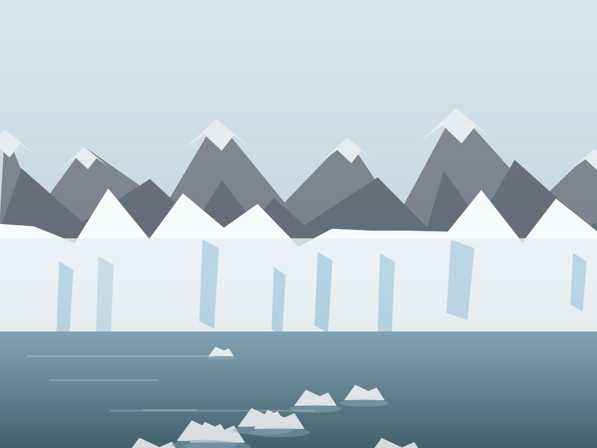
Degelo
É o segundo maior fator de elevação do nível do mar, alerta a Organização Meteorológica Mundial.
Alerta
Cidade tem alerta de ventos de até 90 km/h; parques e trilhas foram fechados por precaução.
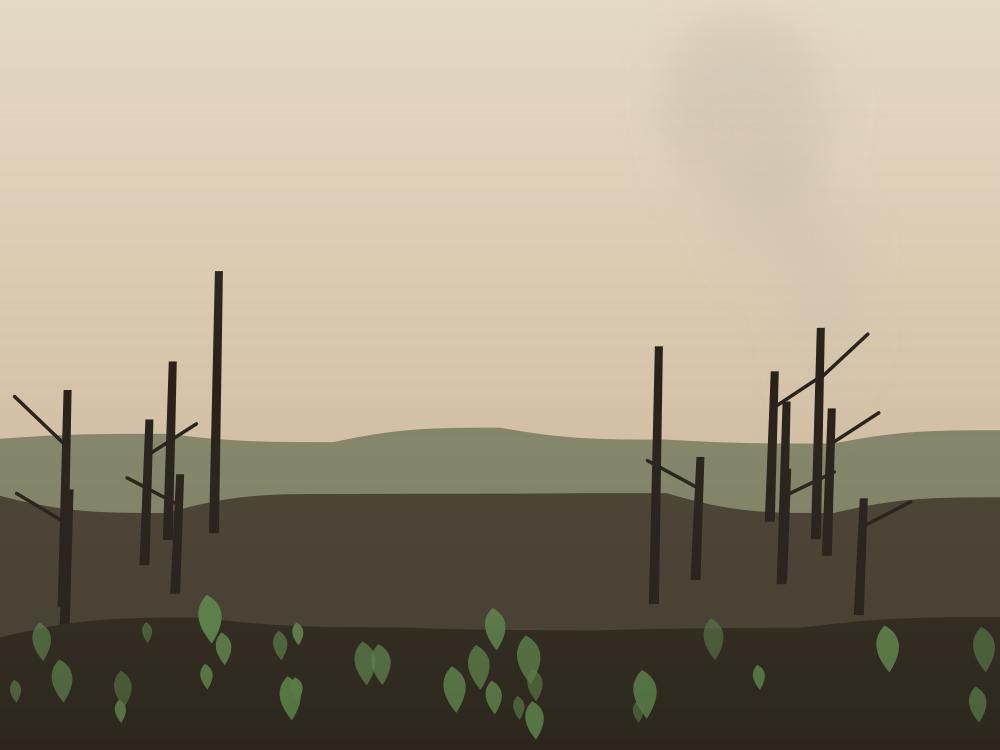
Queimadas no Brasil
O país registrou 12,7 milhões de hectares atingidos pelo fogo, número abaixo da média das últimas quatro décadas. A Amazônia teve o menor total da série histórica.
MapBiomas Fogo há 2 meses
Derretimento de geleiras
A perda de gelo em uma única semana equivale ao volume de várias piscinas olímpicas por segundo. A água de degelo já muda o regime dos rios na Europa.
Organização Meteorológica Mundial há 4 dias
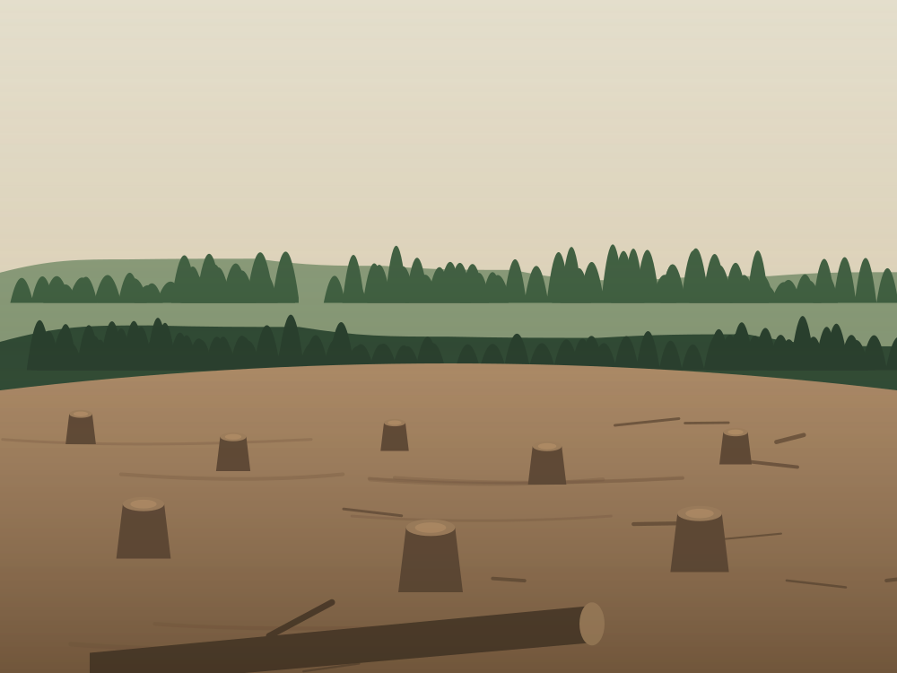
Desmatamento na Amazônia
O dado preocupa porque o bioma pode estar chegando a um ponto irreversível de destruição, no qual a floresta deixa de conseguir produzir a própria chuva.
MapBiomas há 12 horas
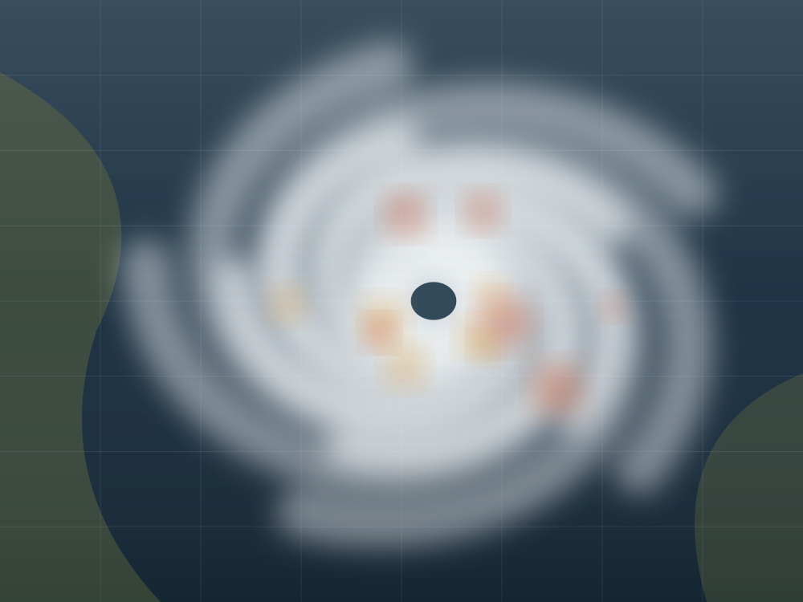
Ciclones
O sistema traz chuva forte e rajadas no litoral catarinense e gaúcho. Moradores de área de risco devem acompanhar os avisos da Defesa Civil.
Inmet há 9 horas
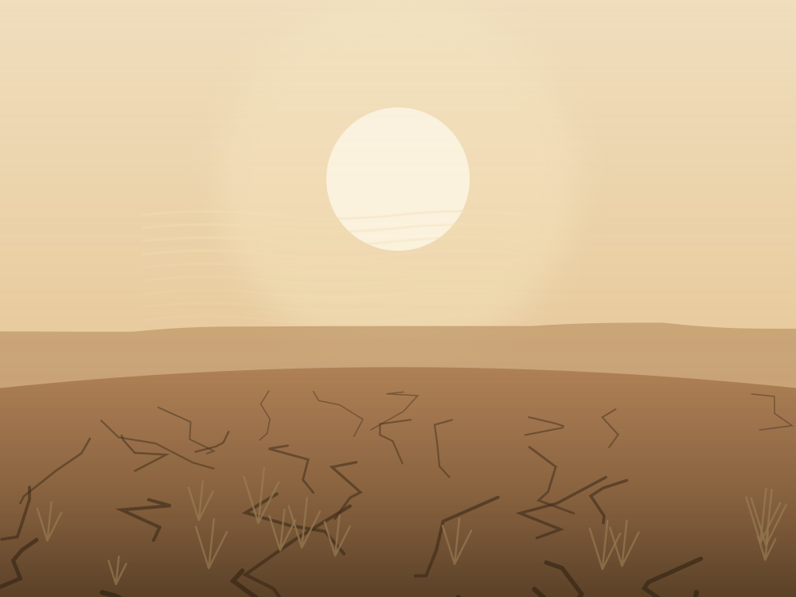
Mudanças climáticas
O fenômeno também passou a acontecer em mais regiões do planeta. O calor extremo pode ser mortal e castiga estradas, redes de energia e plantações.
Análise de dados da NASA e da NOAA atualizado há 3 dias
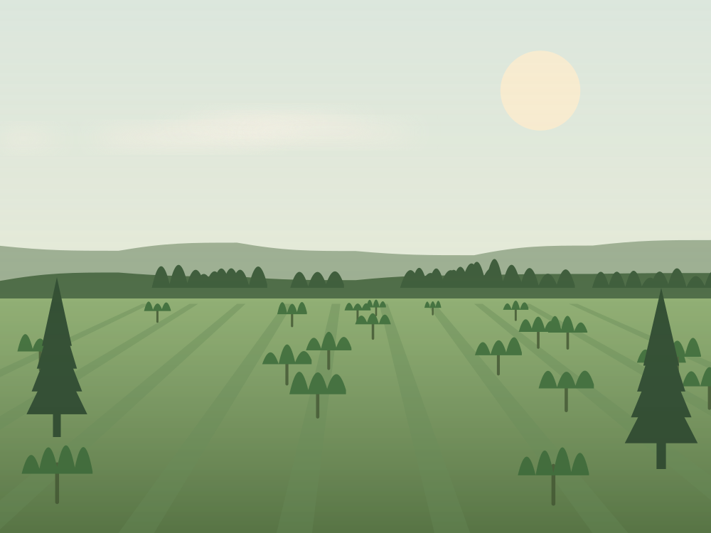
Tem solução
Projetos apostam na recuperação do solo, na preservação da biodiversidade e no reflorestamento para produzir alimento sem secar as nascentes da região.
Reportagem local há 5 dias
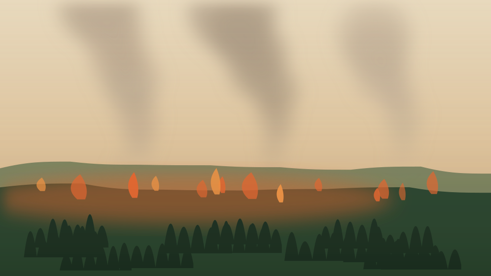
Reportagem especial · 12 min
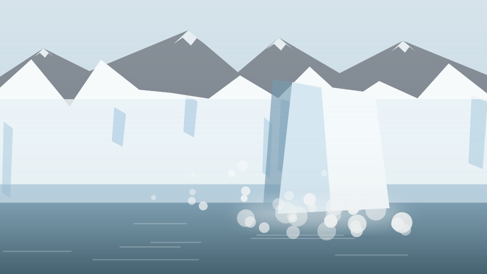
Explicador · 7 min
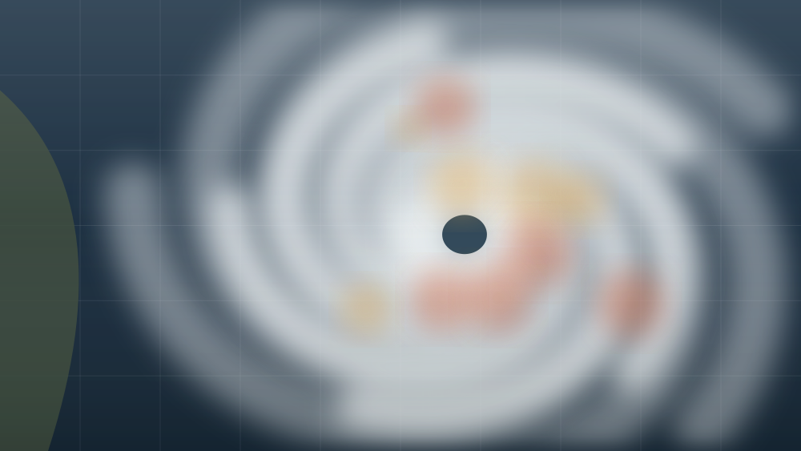
Explicador · 9 min
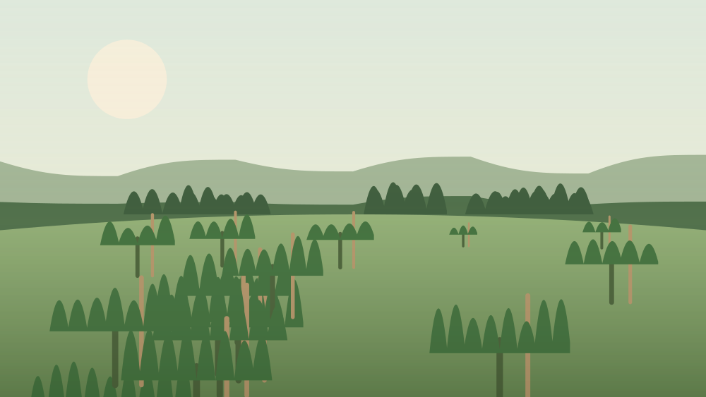
Série Tem Solução · 15 min
Acompanhar o noticiário do clima cansa, e é fácil fechar a página com a sensação de que nada do que a gente faz muda alguma coisa. Mas quase toda notícia daqui tem um lado que depende de escolhas comuns — as nossas.
Toda nota desta página mostra de onde veio o dado. Boato sobre clima atrasa decisão, e checar leva menos tempo do que compartilhar.
Ciclone, calor extremo e seca chegam com aviso. A Defesa Civil manda alertas gratuitos por SMS, e saber com antecedência protege quem está perto de você.
Restauração não é só coisa de governo: mutirão de plantio, horta de bairro e nascente cercada aparecem nos dados de recuperação ano após ano.
Quer entender como o mundo chegou até aqui? A linha do tempo das COPs conta os trinta e três anos de negociação que estão por trás dessas manchetes.